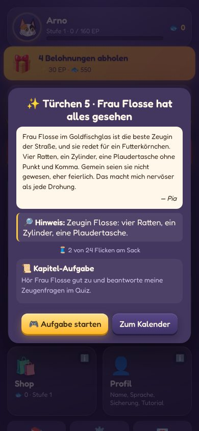
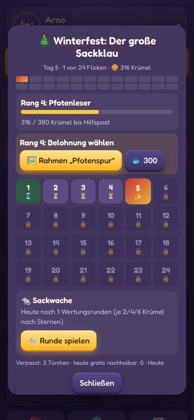
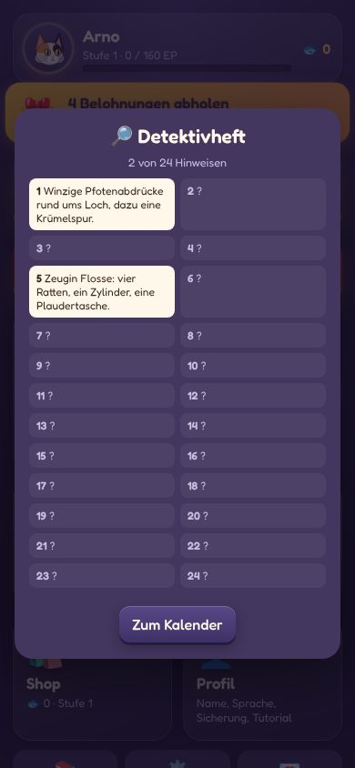
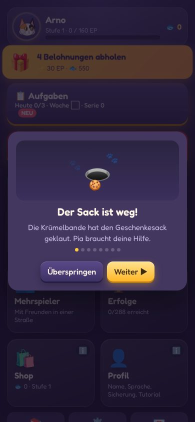
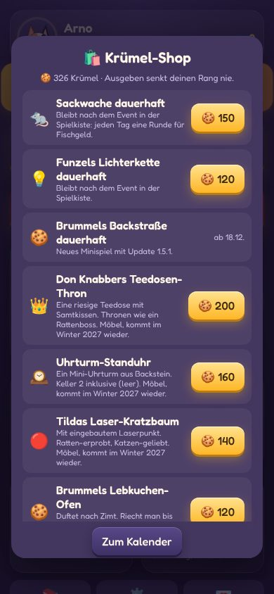

Der Sack ist weg!The sack is gone!
Die Krümelbande, vier freche Ratten, hat den Geschenkesack der Stadt geklaut und in 24 Flicken zerlegt. Postkatze Pia braucht deine Hilfe.The Crumb Gang, four cheeky rats, stole the town’s gift sack and cut it into 24 patches. Penny the post cat needs your help.

Jeden Tag ein TürchenA door every day
Vom 1. bis 24. Dezember öffnest du im Adventskalender ein Kapitel der Geschichte. Jedes Türchen bringt einen Flicken, einen Hinweis und Krümel. Dauert eine Minute.From December 1 to 24 you open a chapter of the story in the Advent calendar. Every door brings a patch, a clue and crumbs. Takes a minute.

Flicken für FlickenPatch by patch
Mit allen 24 Flicken ist der Sack an Heiligabend wieder ganz. Die Hinweise sammelst du im Detektivheft. Das Finale bringt das Möbel „Der Geschenkesack“ mit dem Stempel „Erstausgabe 2026“.With all 24 patches the sack is whole again on Christmas Eve. You collect the clues in your detective notebook. The finale brings “The Gift Sack” furniture stamped “First Edition 2026”.
SackwacheSack Watch
Das neue Minispiel: Tipp die Ratten an, bevor sie die Päckchen erreichen. Dicke Ratten brauchen zwei Tipps, die Tarnratte im Päckchen-Kostüm lässt du in Ruhe. Zwei Wertungsrunden am Tag bringen Krümel.The new mini-game: tap the rats before they reach the parcels. Fat rats take two taps, leave the rat in the parcel costume alone. Two scored rounds a day earn crumbs.
Krümel sammelnCollect crumbs
Krümel gibt es für Türchen, Kapitel-Aufgaben, deine Tagesaufgaben, den Tagesbonus und die Minispiele. Zehn Spürnasen-Ränge bringen Fischgeld, Rahmen und Möbel.Crumbs come from doors, chapter tasks, your daily tasks, the daily bonus and the mini-games. Ten sleuth ranks bring fish coins, frames and furniture.
Krümel-ShopCrumb shop
Teedosen-Thron, Uhrturm-Standuhr, Laser-Kratzbaum und mehr. Ausgeben senkt deinen Rang nie. Die Event-Möbel kommen nächsten Winter wieder, der Stempel „Erstausgabe 2026“ bleibt nur dieses Jahr.Tea-tin throne, clock-tower clock, laser cat tree and more. Spending never lowers your rank. The event furniture returns next winter, the “First Edition 2026” stamp is this year only.

Nichts verpasstNothing missed
Verpasste Türchen holst du gratis nach, bis zum 6. Januar. Wer spät einsteigt, bekommt einen Aufholkoffer mit Krümeln. Videos sind nur eine Abkürzung.Catch up on missed doors for free until January 6. Late joiners get a catch-up case full of crumbs. Videos are just a shortcut.

Bis DreikönigUntil Epiphany
Zwischen den Jahren gibt es täglich eine Dankeskarte, an Silvester die Silvester-Wache. Am 7. Januar werden übrige Krümel zu Fischgeld (1 Krümel = 5 🐟). Nichts verfällt.Between the years there’s a thank-you card every day and the New Year’s Eve watch. On January 7 leftover crumbs turn into fish coins (1 crumb = 5 🐟). Nothing expires.